Getting Started
Account Setup
Sign In & Choose Identity Provider
Open a browser to https://app.soluble.cloud/register
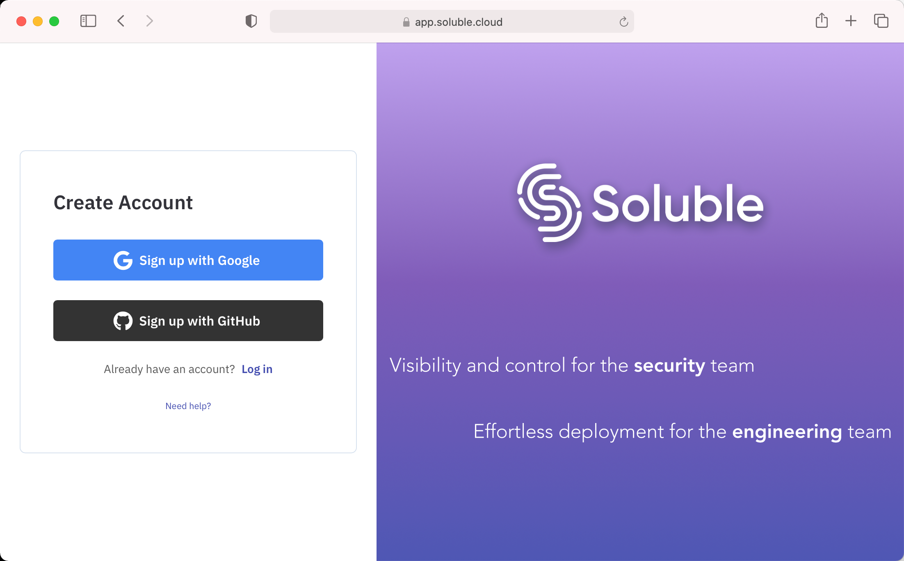
Identity Provider Login
If you are using Google, choose your google account:
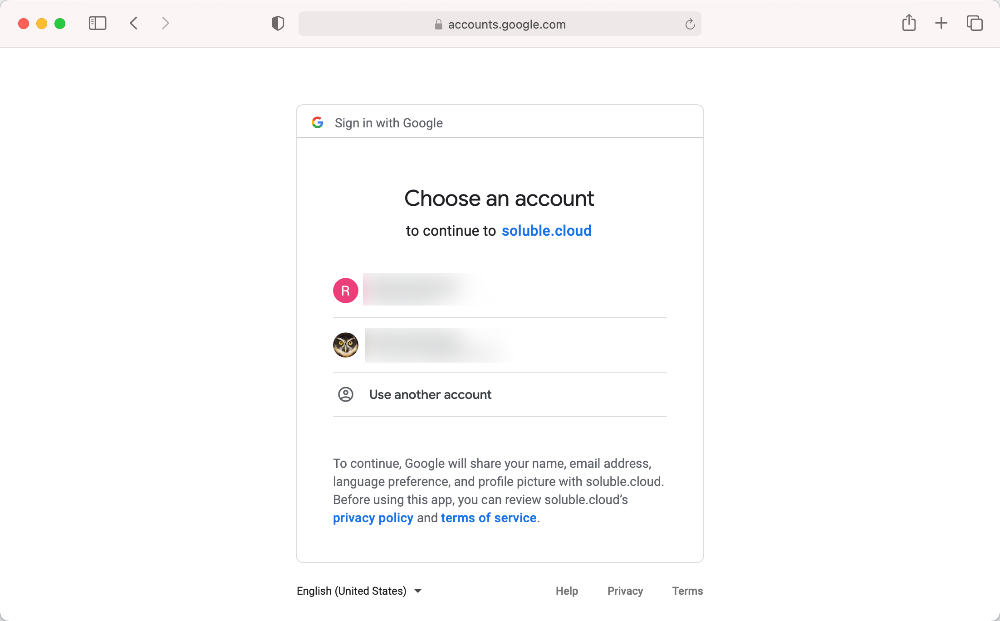
GitHub
If you are using GitHub as your identity provider, authenticate with github.
_ NOTE: We are NOT requesting access to your source code! _
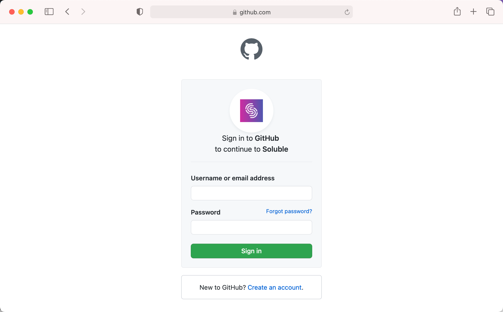
Accept Terms of Service
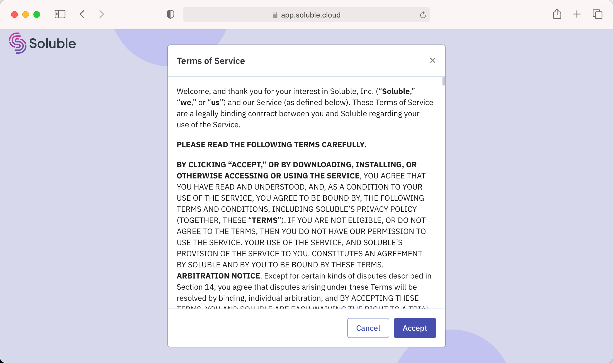
Account Created
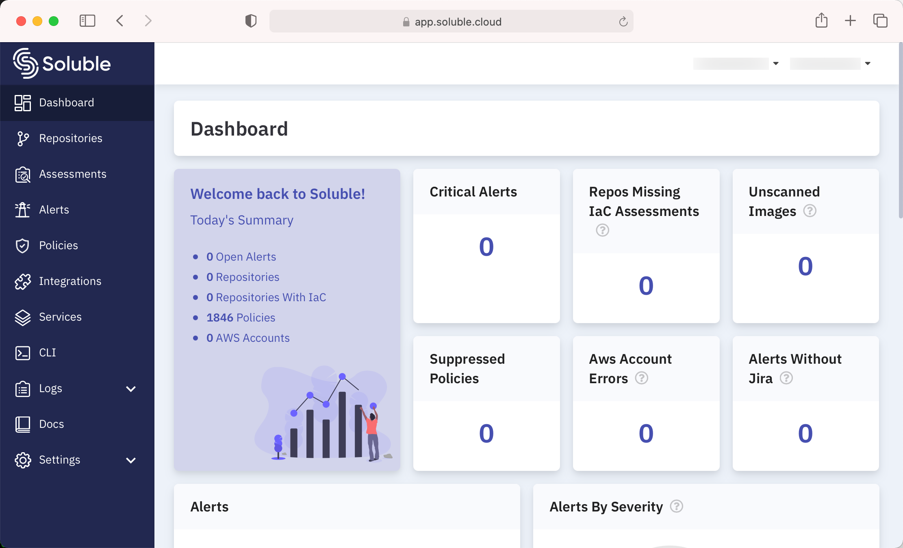
Automated Assessments - Zodiac
Soluble Fusion provides an orchestration engine called Zodiac that runs in your environment and continuously scans your git repositories for security issues.
Zodiac runs as a kubernetes operator.
If you don't use kubernetes, Zodiac can be installed quite easily on Linux / Mac / Windows with k3s or k3d + Docker.
Zodiac is stateless, so you won't lose any data if it is terminated or if the cluster is running in is terminated.
Kubernetes
Install Zodiac on Kubernetes
If you plan to install zodiac into EKS, GKE, AKS or another kubernetes environment, skip ahead to install zodiac
Install Zodiac on Linux via K3S
If you have access to a Linux host, but don't have easy access to a kubernetes cluster, k3s.io is the easiest way to bootstrap a functioning single-node environment.
Zodiac does not need to be accessible or publicly avaialble in any way.
Just follow the instructions on the k3s.io site.
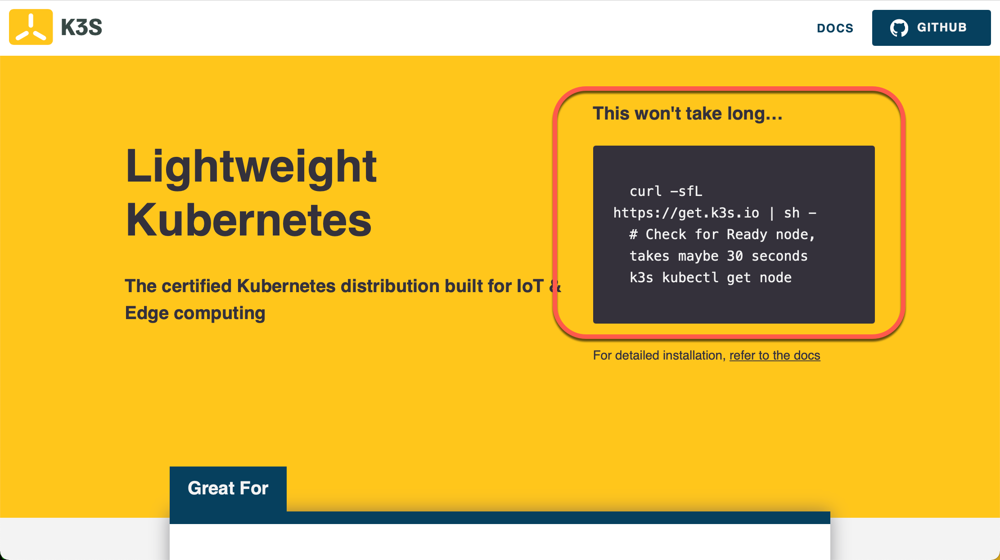
Once your cluster is up and running, proceed to install zodiac.
Install Zodiac on Docker via K3D
If you don't have convenient access to a kubernetes cluster or Linux host, or if you just want to deploy zodiac in your local environment, we reccommend using k3d.
K3D is a lightweight derivative of k3s that runs easily on top of Docker.
We find that k3d is the simplest and fastest way to maintain a kubernetes cluster in your dev environment You can create and re-create an entire functional kubernetes cluster in just a few seconds.
You can also use KIND or Docker Desktop's Kubernetes distribution, but k3d is much faster and easier to use.
Installation instructions are here: https://k3d.io/#installation
Once you have k3d itself installed, just run k3d cluster create and in a few seconds you'll have a functioning kubernetes cluster.
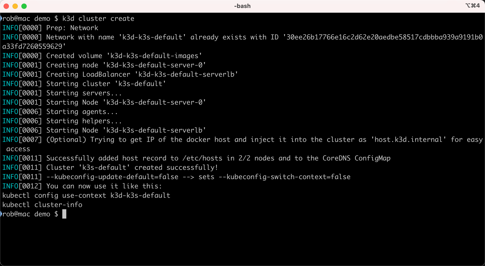
Once your kubernetes cluster is working, continue to Install Zodiac
Install Zodiac
In the Soluble app, go to https://app.soluble.cloud/add-zodiac and click the downlod manifest button.
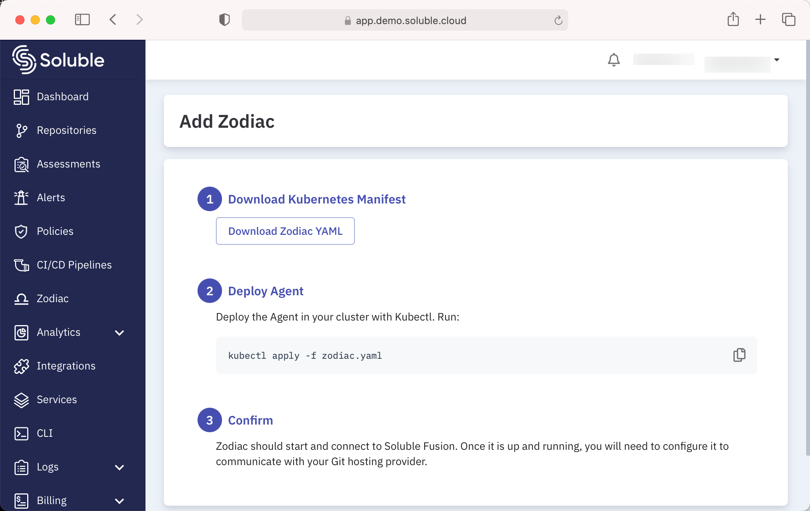
This will download a kubernetes manifest bundle. You can review this if you like before applying it to your cluster.
The manifest bundle contains:
namespacenamedsolublein which everything will runserviceaccountfor thezodiacpods, which has control over thesolublenamespacesecretnamedzodiac-configdeploymentfor the zodiac operatorservicefor the zodiac operator (not strictly required)- a few other odds and ends to tie this all together
Apply it to your cluster with kubectl apply -f zodiac.yaml:
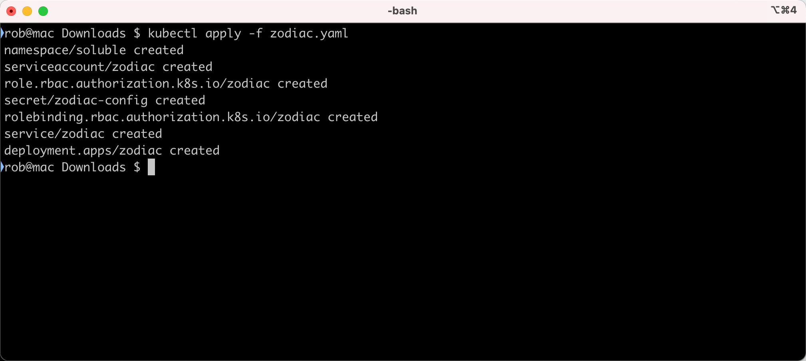
In a minute or two, you should see the Deployment up and ready.
You can check with kubectl get deployments -n soluble:
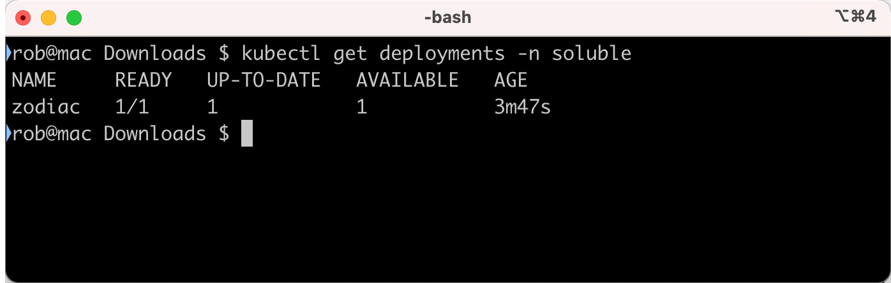
If zodiac can't communicate with the Soluble Fusion SaaS platform, it will enter a crash loop.
Configure Zodiac
Zodiac needs credentials to be able to communicate with your Git hosting provider. These are configured in Kubernetes because we don't want access to your source code.
GitHub
The easiest way to get credentials to Zodiac is to transfer them from GitHub's CLI.
If you don't have the CLI installed, head to https://cli.github.com and check it out.
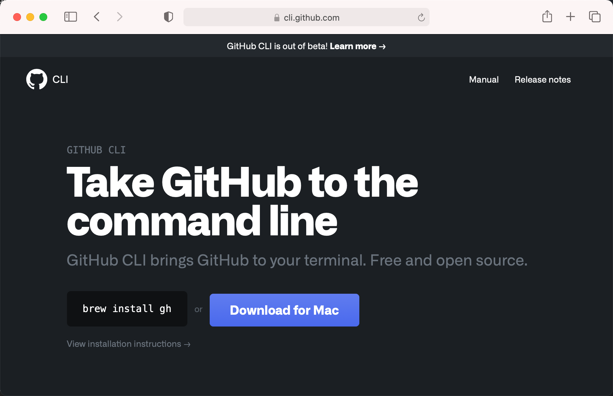
Once you have it configured, verify that you can use it to access your repos with gh repo list and gh repo clone.
The GitHub CLI stores the OAuth token in ${HOME}/.config/gh/hosts.yml.
The format of the file is as follows. If you don't want to use the GitHub CLI to create it you can do so manually.
github.com:
user: <your-github-username>
oauth_token: <oauth-token>
Now that we have the file containing credentials, we can transfer it to kubernetes as a secret that Zodiac can read. Do this with:
kubectl create secret generic git-providers --from-file=${HOME}/.config/gh/hosts.yml --namespace soluble
secret/git-providers created
Zodiac will notice this change and connect to the provider and start scanning your repos.
GitLab
Zodiac uses the GitHub file format for gitlab as well.
Just add the following. Note that the provider attribute is optional if the hostname is githab.com.
gitlab.com:
user: <gitlab-username>
token: <api-token>
provider: gitlab
Transfer the file into kubernetes with kubectl:
$ kubectl create secret generic git-providers --from-file=hosts.yml --namespace soluble
secret/git-providers created
Zodiac will notice the change and start processing the repos that are available.
Manual Assessments - CLI
If you would prefer to run assessments manually, you can install the Soluble Fusion CLI on Linux, Mac or Windows. Please see the CLI installation documentation
Once you have the CLI installed, you can run your first assessment.